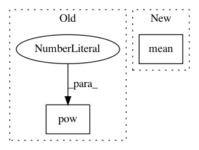

eb110220d9a39a294479433cefc274e42506737e,main.py,,main,#,75
Before Change
returns[step] = returns[step + 1] * \
args.gamma * masks[step] + rewards[step]
value_loss = (values[:-1] - Variable(returns[:-1])).pow(2).mean()
advantages = returns[:-1] - values[:-1].data
action_loss = -(Variable(advantages) * action_log_probs).mean()
After Change
dist_entropy = -(log_probs * probs).sum(-1).mean()
advantages = Variable(returns[:-1]) - values
value_loss = advantages.pow(2).mean()
action_loss = -(Variable(advantages.data) * action_log_probs).mean()
optimizer.zero_grad()
In pattern: SUPERPATTERN
Frequency: 4
Non-data size: 2
Instances
Project Name: ikostrikov/pytorch-a2c-ppo-acktr
Commit Name: eb110220d9a39a294479433cefc274e42506737e
Time: 2017-09-16
Author: ikostrikov@gmail.com
File Name: main.py
Class Name:
Method Name: main
Project Name: ray-project/ray
Commit Name: b7dbbfbf4111698145bb9e0bf2e34e36fef0430c
Time: 2020-11-25
Author: sven@anyscale.io
File Name: rllib/agents/sac/sac_torch_policy.py
Class Name:
Method Name: actor_critic_loss
Project Name: lcswillems/torch-rl
Commit Name: cd1da3fc9c5b68a9e583b8c26e5cdae58560be6d
Time: 2018-04-19
Author: lcswillems@gmail.com
File Name: torch_ac/algos/ppo.py
Class Name: PPOAlgo
Method Name: update_parameters
Project Name: jindongwang/transferlearning
Commit Name: e0b38194a6b8b53a0a7380c02466e052eff66ad0
Time: 2019-04-15
Author: jindongwang@outlook.com
File Name: code/distance/coral_loss.py
Class Name:
Method Name: CORAL_loss